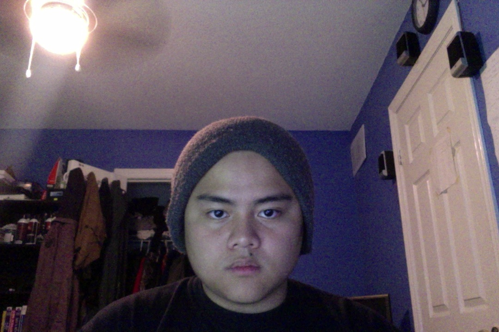

I was born and raised for 13 years in Philippines of Cebu City, came to Canada at the age of 13, and is currently 21 years old this year. Going to Georgian College for a 3 year program Computer Programming Analyst, and I'm in my 3rd semester this September. My hobbies would be watching sports channel, playing computer games, and playing basketball.